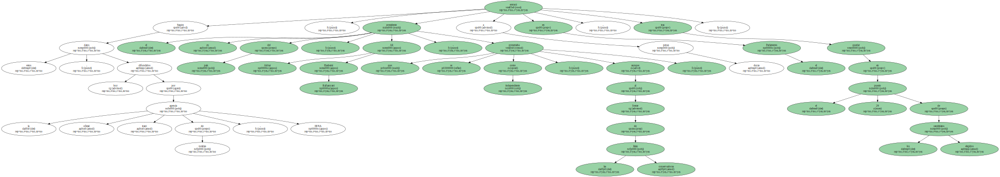
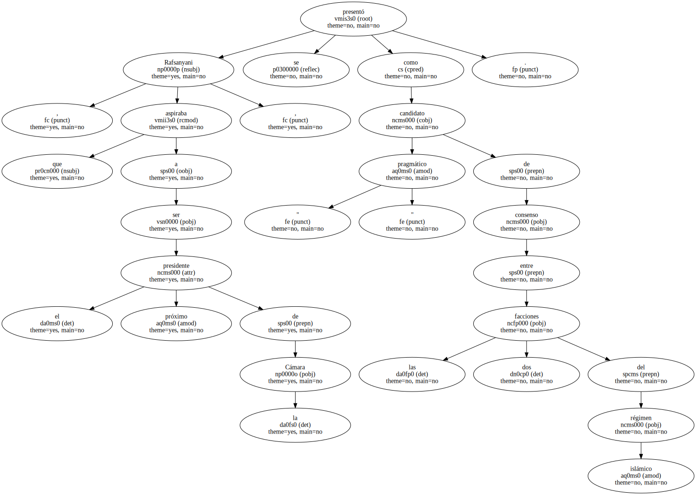
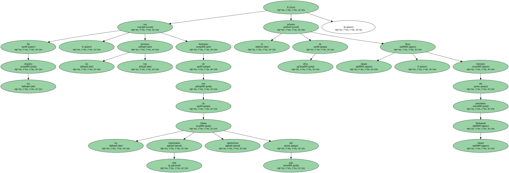
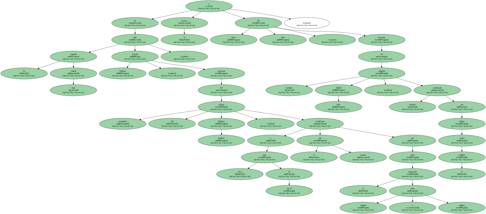
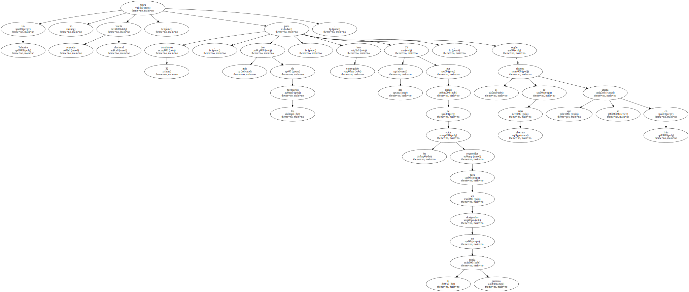
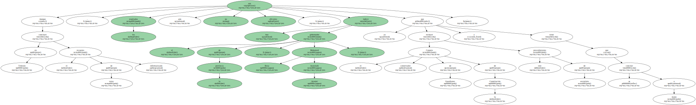
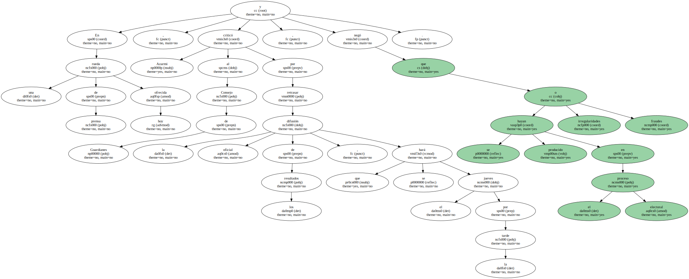
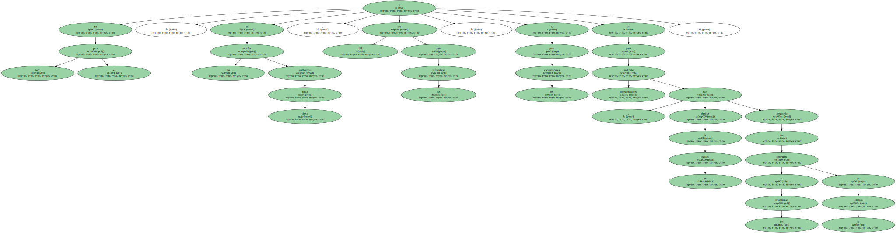
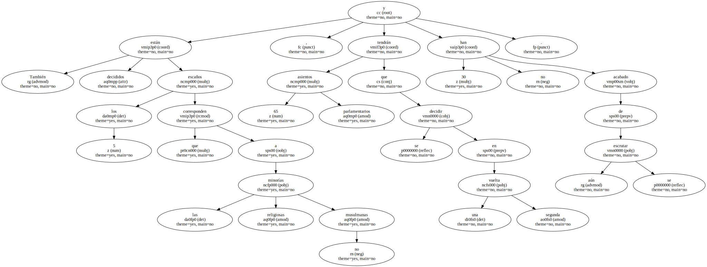

Los conservadores islámicos no tendrán ningún representante por Teherán en el futuro Parlamento de Irán , al haber copado los reformistas del régimen 27 de los 30 escaños en liza , mientras los candidatos independientes obtenían los tres restantes , según fuentes oficiales.

Según estos datos , difundidos hoy por la agencia oficial iraní de noticias , IRNA , el ex presidente del país , Ali Akbar Hashemi Rafsanyani , que se presentaba como independiente , aunque al frente de las listas conservadoras , entrará a duras penas en el Parlamento , tras quedar en el puesto 29 de los candidatos elegidos.
Rafsanyani , que aspiraba a ser el próximo presidente de la Cámara , se presentó como candidato " pragmático " de consenso entre las dos facciones del régimen islámico.
De los elegidos , los tres primeros son hermanos de tres de los más importantes líderes aperturistas del país , el primero de ellos Reza Jatamí , hermano del presidente Mohamed Jatamí.
La segunda más votada ha sido Yamile Kadivar , hermana del clérigo musulmán chií Mohsen Kadivar , condenado a cinco años de cárcel el pasado año por pedir la separación entre religión y política ; y el tercero Ali Reza Nuri , hermano del también religioso Abdola Nuri , condenado también por delitos contra la religión.
En Teherán no habrá segunda vuelta electoral , pues 32 candidatos , dos más de los necesarios , han conseguido más del 25 por ciento de los votos requeridos para ser designados en la primera ronda , según el sistema de listas abiertas que se utiliza en Irán.
Aunque en Teherán concluyó el recuento de votos informatizado , los resultados aún no son oficiales , indicó hoy el gobernador de la provincia , Mohamed Reza Ayatolahi Azarmi , ya que el conservador Consejo de Guardianes de la Constitución rechazó este procedimiento de escrutinio y se tiene que concluir a mano.
En una rueda de prensa ofrecida hoy , Azarmi criticó al Consejo de Guardianes por retrasar la difusión oficial de los resultados , que se hará el jueves por la tarde , y negó que se hayan producido irregularidades o fraudes en el proceso electoral.
En todo el país , de los escaños atribuidos hasta ahora , 121 son para los reformistas , 32 para los conservadores y 37 para candidatos independientes , algunos de los cuales han asegurado que apoyarán a los reformistas en la Cámara.
También están decididos los 5 escaños que corresponden a las minorías religiosas no musulmanas , 65 asientos parlamentarios se tendrán que decidir en una segunda vuelta y 30 aún no se han acabado de escrutar.
